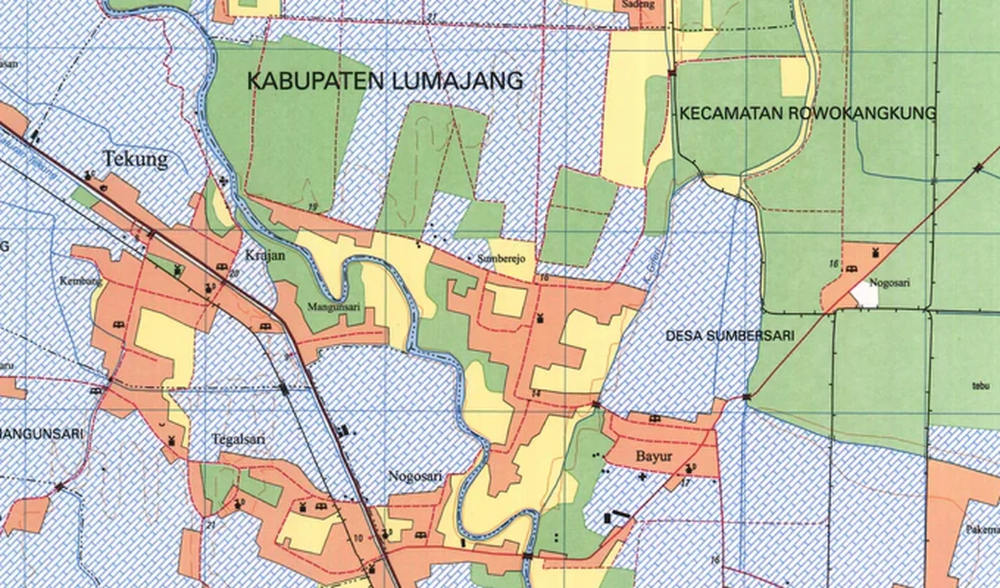
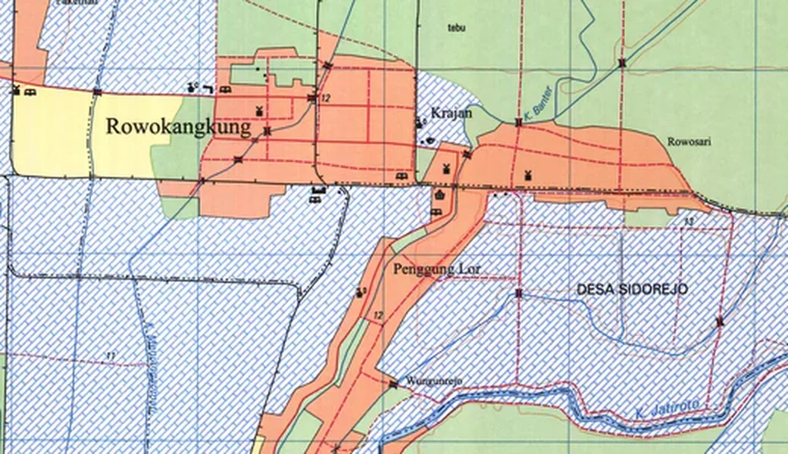
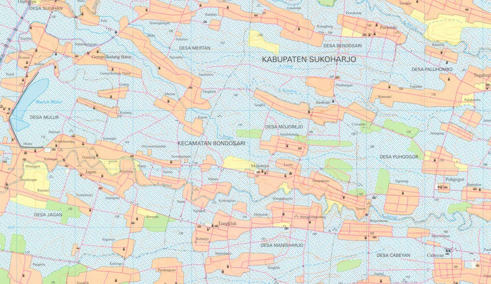
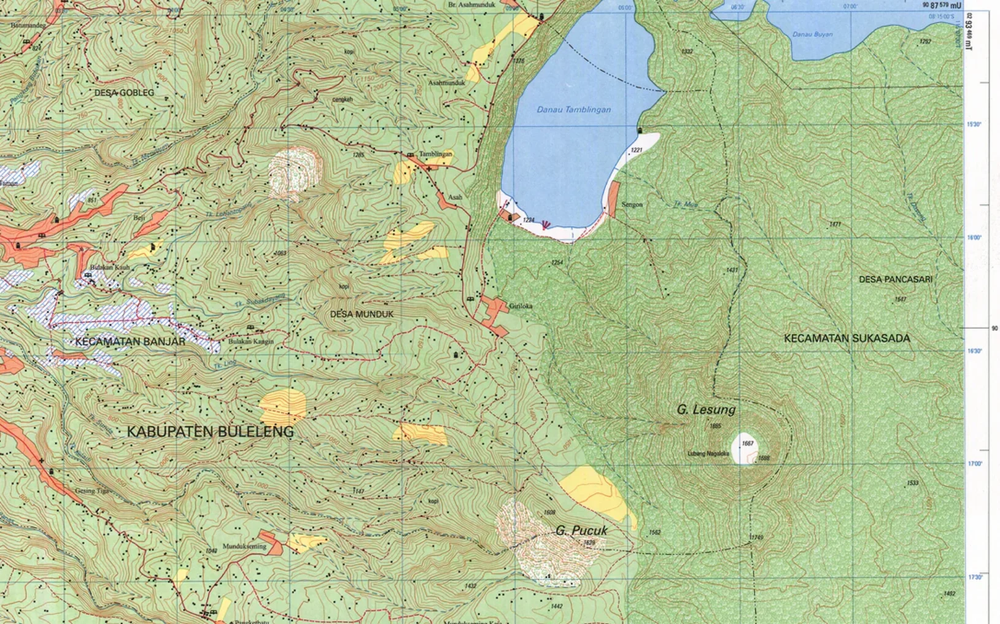
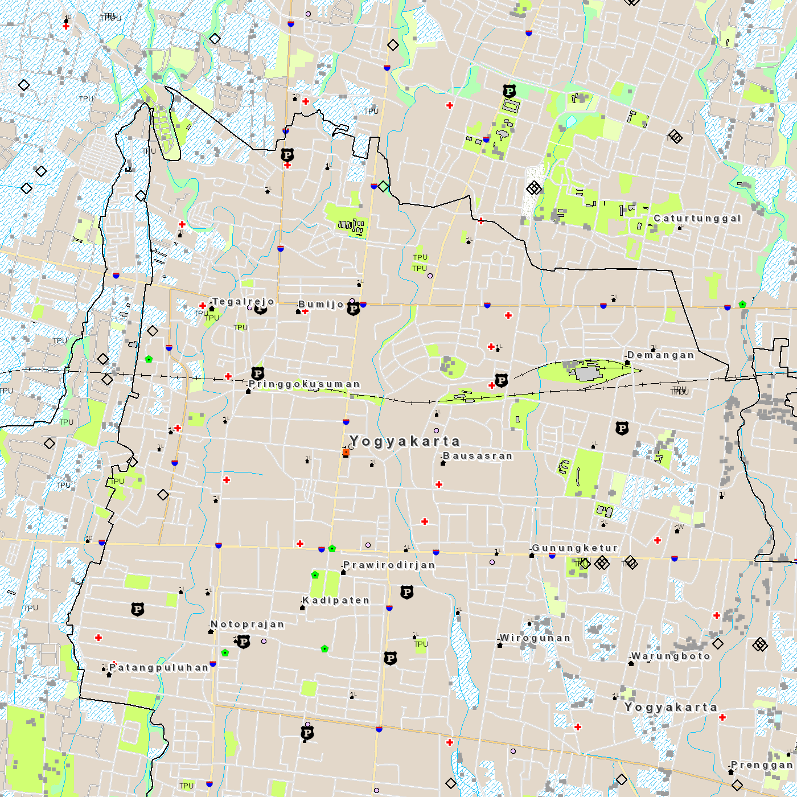

Contoh unsur alami (Pasal 2 ayat 2)
Pulau, kepulauan, gunung, pegunungan, bukit, dataran tinggi, gua, lembah, tanjung, semenanjung, danau, sungai, muara, samudra, laut, selat, teluk, dan unsur bawah laut.
Nama pada peta harus benar dan mudah dibaca. Pertemuan ini membahas dua hal:
CPMK4. Mahasiswa mampu mengevaluasi toponimi, tata letak, keseimbangan, dan kelengkapan peta berdasarkan kaidah kartografi.
Setelah mempelajari materi ini, mahasiswa mampu:
Peraturan Pemerintah Nomor 2 Tahun 2021 tentang Penyelenggaraan Nama Rupabumi (Pasal 1) mendefinisikan istilah berikut:
| Istilah | Pengertian menurut PP 2/2021 |
|---|---|
| Rupabumi | Permukaan bumi beserta objek yang dapat dikenali identitasnya, baik berupa unsur alami maupun unsur buatan. |
| Unsur rupabumi | Bagian dari rupabumi yang terletak di bawah, pada, atau di atas permukaan bumi, yang dapat dikenali identitasnya melalui pengukuran atau kenampakan fisiknya, baik di darat, pesisir, maupun laut. |
| Nama rupabumi | Nama yang diberikan pada unsur rupabumi. |
| Unsur alami | Unsur rupabumi yang terbentuk secara alami tanpa campur tangan manusia. |
| Unsur buatan | Unsur rupabumi yang terbentuk karena campur tangan manusia. |
Pulau, kepulauan, gunung, pegunungan, bukit, dataran tinggi, gua, lembah, tanjung, semenanjung, danau, sungai, muara, samudra, laut, selat, teluk, dan unsur bawah laut.
Pasal 3 PP 2/2021 menetapkan 10 prinsip nama rupabumi.
Nama rupabumi, termasuk unsur generiknya, ditulis dalam bahasa Indonesia.
✓ Sesuai: Danau Toba dan Selat Sunda memakai unsur generik bahasa Indonesia (danau, selat).✗ Tidak sesuai: Peta resmi Indonesia yang menulis "Lake Toba" atau "Sunda Strait". Perbaikan: Danau Toba, Selat Sunda.Nama lokal atau nama bersejarah boleh dipertahankan walaupun tidak berbahasa Indonesia.
✓ Sesuai: Kali Code (bahasa Jawa) dan Benteng Vredeburg (bahasa Belanda) dipertahankan karena memiliki nilai budaya dan sejarah.✗ Tidak sesuai: Perumahan baru bernama "Green Valley Residence" memakai bahasa Inggris tanpa nilai sejarah atau budaya. Perbaikan: "Perumahan Lembah Hijau". Lihat penjelasan tentang nama perumahan di bawah kartu-kartu ini. (ilustrasi)Nama ditulis dengan huruf Latin agar dapat dibaca secara seragam.
✓ Sesuai: Yogyakarta ditulis dengan huruf Latin pada peta.✗ Tidak sesuai: Peta resmi yang hanya menulis nama dengan aksara Jawa tanpa huruf Latin. Aksara daerah boleh ditambahkan pada papan nama, tetapi nama di peta tetap ditulis dengan huruf Latin.Satu unsur hanya memiliki satu nama baku; nama lain dicatat sebagai varian di gazeter.
✓ Sesuai: Kota yang sama selalu ditulis "Yogyakarta" pada semua peta resmi.✗ Tidak sesuai: Satu peta menulis "Djokjakarta" (ejaan lama), sedangkan peta lain menulis "Yogyakarta" untuk kota yang sama. Perbaikan: pakai satu nama baku, yaitu Yogyakarta.Nama tidak boleh merendahkan atau menyinggung kelompok masyarakat tertentu.
✓ Sesuai: Nama yang netral, misalnya diambil dari nama sungai, bukit, tumbuhan, atau tokoh setempat yang dihormati.✗ Tidak sesuai: Nama yang berisi ejekan atau sebutan merendahkan terhadap suku, agama, ras, atau golongan tertentu. Contoh nyata sengaja tidak ditampilkan.Nama dibuat ringkas agar mudah ditulis, dibaca, dan diingat.
✓ Sesuai: Yosowilangun Lor dan Banyuputih Kidul (RBI Yosowilangun) hanya terdiri atas dua kata.✗ Tidak sesuai: Nama "Taman Indah Permai Asri Sejahtera" terdiri atas lima kata. Perbaikan: "Taman Indah Permai". (ilustrasi)Nama orang yang sudah meninggal boleh dipakai paling cepat lima tahun setelah ia meninggal.
✓ Sesuai: Bandar Udara Internasional Soekarno-Hatta memakai nama dua tokoh yang telah wafat puluhan tahun sebelumnya.✗ Tidak sesuai: Jalan baru dinamai dengan nama bupati yang masih menjabat. Perbaikan: pakai nama tempat atau nama tokoh yang telah wafat lebih dari lima tahun.Unsur rupabumi tidak dinamai dengan nama kantor, perusahaan, atau merek.
✓ Sesuai: Waduk Sermo di Kulon Progo memakai nama tempat setempat.✗ Tidak sesuai: Waduk diberi nama perusahaan yang membangunnya. Perbaikan: pakai nama desa atau sungai di lokasi waduk.Nama harus mendukung kedaulatan dan persatuan, terutama di wilayah perbatasan.
✓ Sesuai: Pulau terluar seperti Pulau Miangas di perbatasan dengan Filipina memiliki nama baku yang tercatat di gazeter.✗ Tidak sesuai: Pulau kecil di perbatasan dibiarkan tanpa nama baku atau hanya memakai nama dari peta negara lain, sehingga klaim wilayahnya menjadi lemah.Ejaan mengikuti aturan BIG, dan nama harus diletakkan pada unsur yang benar.
✓ Sesuai: "K. Bondoyudo" menulis unsur generik sekali dan diletakkan pada alur Kali Bondoyudo.✗ Tidak sesuai: "Sungai Kali Bondoyudo" menulis unsur generik dua kali, karena "kali" sudah berarti sungai. Perbaikan: "K. Bondoyudo".Nama rupabumi yang telah ditetapkan oleh pemerintah melalui proses pengumpulan, penelaahan, pengumuman, dan penetapan. Peta resmi wajib memakai nama baku.
Nama lain untuk unsur yang sama, misalnya nama lama atau ejaan lama. Nama ini dapat dicatat, tetapi tidak menggantikan nama baku di peta.
Endonim (endonym) adalah nama dalam bahasa setempat, misalnya Deutschland. Eksonim (exonym) adalah nama untuk tempat yang sama dalam bahasa lain, misalnya Jerman.
Nama rupabumi terdiri atas dua bagian:
| Nama | Unsur generik | Arti | Unsur spesifik |
|---|---|---|---|
| Kali Bondoyudo | Kali (K.) | sungai (Jawa) | Bondoyudo |
| Krueng Aceh | Krueng (Kr.) | sungai (Aceh) | Aceh |
| Batang Hari | Batang (Bt.) | sungai (Sumatra) | Hari |
| Tukad Badung | Tukad (Tk.) | sungai (Bali) | Badung |
| Situ Gintung | Situ (St.) | danau kecil (Jawa Barat) | Gintung |
| Gunung Semeru | Gunung (G.) | gunung | Semeru |
SNI 6502.2:2010 (peta RBI 1:25.000) mengatur:
| Kelompok unsur | Jenis huruf | Ukuran | Contoh tampilan |
|---|---|---|---|
| Perairan: laut, sungai, teluk, selat, danau | Serif, miring (italic), biru | 1,5–5,0 mm, sesuai luas dan tingkat unsur | SELAT · K. Jatiroto |
| Relief: pegunungan, gunung, bukit, tanjung, pulau, lembah | Serif, miring, hitam | 1,5–5,0 mm | PEGUNUNGAN · G. Semeru |
| Ibu kota negara | Serif, huruf besar, tegak, hitam | 4,0 mm | JAKARTA |
| Ibu kota provinsi | Serif, huruf besar, tegak, hitam | 3,0 mm | SURABAYA |
| Ibu kota kabupaten/kota | Serif, huruf besar, tegak, hitam | 2,5 mm | LUMAJANG |
| Kota kecamatan, kampung | Serif, huruf besar-kecil, tegak, hitam | 2,0 mm (kecamatan); 1,5–2,0 mm (kampung) | Rowokangkung · Krajan |
| Nama wilayah administrasi (kabupaten, kecamatan, desa) | Sans serif, huruf besar, tegak, medium, hitam | 2,0 mm | DESA SIDOREJO |
| Unsur lain (bandara, bendungan, dan sebagainya) | Sans serif medium, huruf besar-kecil, tegak, hitam | 1,5–2,0 mm | Bandar Udara Blang Bintang |
Dari tabel tersebut terlihat logika hierarki tipografi (typographic hierarchy) RBI:
Singkatan baku (Lampiran C) dipakai jika ruang terbatas:
Potongan berikut berasal dari RBI 1:25.000 Lembar 1607-541 Yosowilangun. Klik nomor merah untuk melihat penjelasan setiap nama dan bandingkan dengan aturan pada bagian 5.

Klik nomor untuk membuka penjelasan; klik lagi atau klik di luar untuk menutup.

Sumber: Peta Rupabumi Digital Indonesia 1:25.000, Lembar 1607-541 Yosowilangun, BIG.
Nama lembar peta RBI juga ditentukan berdasarkan hierarki toponimi (SNI 6502.2:2010 butir 6.1). Urutan prioritasnya:
Contoh: lembar 1607-541 diberi nama Yosowilangun karena Yosowilangun merupakan kota kecamatan pada lembar tersebut.
Pada latihan ini kamu memeriksa 5 nama pada satu peta dengan 4 pertanyaan ya/tidak.



| No. | Pertanyaan | Cara memeriksa |
|---|---|---|
| 1 | Ejaan sama dengan nama baku? | Ketik nama tanpa unsur generik di SINAR BIG, misalnya "Mulur" untuk "Waduk Mulur", lalu bandingkan ejaannya. |
| 2 | Jenis huruf sesuai jenis unsurnya? | Bandingkan dengan ringkasan aturan SNI di bawah tabel ini. |
| 3 | Posisi tepat? | Nama permukiman dekat simbolnya, nama sungai mengikuti alur, dan nama wilayah berada di dalam wilayahnya. |
| 4 | Tidak bertumpuk dengan nama, simbol, atau garis lain? | Lihat apakah ada huruf yang tertutup atau menutupi garis jalan, sungai, atau batas. |
| No. | Nama di peta | Jenis unsur | 1. Ejaan | 2. Huruf | 3. Posisi | 4. Tidak bertumpuk | Perbaikan (jika ada "Tidak") |
|---|---|---|---|---|---|---|---|
| 1 | … | … | Ya / Tidak | Ya / Tidak | Ya / Tidak | Ya / Tidak | … |
| 2–5 | … | … | … | … | … | … | … |
| No. | Nama di peta | Jenis unsur | 1. Ejaan | 2. Huruf | 3. Posisi | 4. Tidak bertumpuk | Perbaikan |
|---|---|---|---|---|---|---|---|
| 1 | KABUPATEN SUKOHARJO | Wilayah administrasi | Cek di SINAR | Ya (sans serif kapital) | Ya (di dalam wilayah) | Ya | Tidak perlu |
| 2 | Mojorejo | Permukiman | Cek di SINAR | Ya (serif besar-kecil) | Ya (di samping permukimannya) | Ya | Tidak perlu |
| 3 | Waduk Mulur | Perairan | Cek di SINAR | Ya (miring biru) | Ya (di dalam waduk) | Ya | Tidak perlu |
| 4 | KECAMATAN BONDOSARI | Wilayah administrasi | Cek di SINAR | Ya (sans serif kapital) | Ya (di dalam wilayah) | Ya | Tidak perlu |
| 5 | KECAMATAN ROWOKANGKUNG (peta latihan 1) | Wilayah administrasi | Cek di SINAR | Ya | Ya | Tidak: huruf "G" terakhir menutupi garis jalan. | Geser nama sedikit ke kiri agar tidak menutupi jalan. |
| Kriteria | Baik | Perlu perbaikan |
|---|---|---|
| Pilihan nama | Lima nama berasal dari jenis unsur yang berbeda. | Semua nama berasal dari satu jenis unsur. |
| Jawaban | Setiap "Ya" atau "Tidak" disertai alasan singkat. | Hanya menulis "Ya" atau "Tidak" tanpa alasan. |
| Perbaikan | Setiap "Tidak" diberi perbaikan yang jelas. | Masalah ditemukan tetapi tidak diberi perbaikan. |